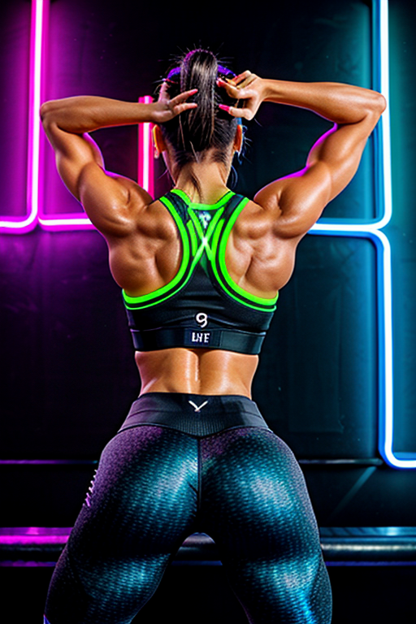
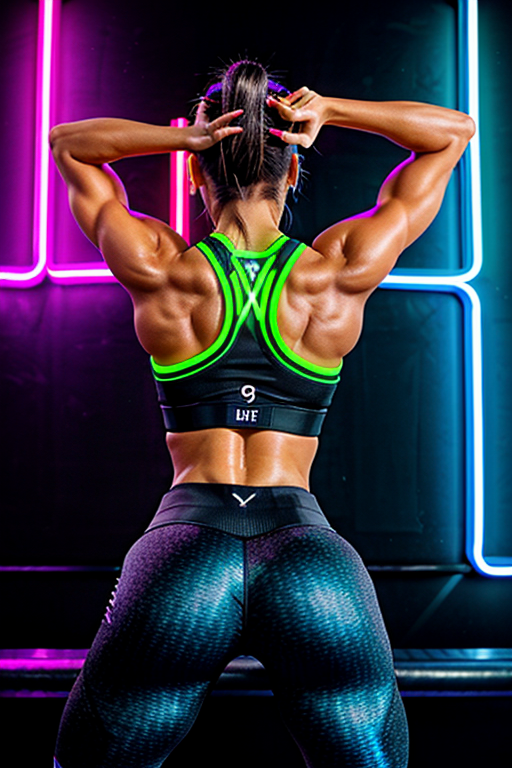

This set explores fitness girl sleep schedule through vintage aesthetics and romantic tone under overcast. Compositions use close-up with indoor studio, keeping focus clear and tidy. Details like streetwear styling and balanced colors make browsing easy.
Browse fitness images. Page 5 of curated fitness-style portrait collection.


 



Designed for readers looking into page5, this page emphasizes clarity and consistency. The image aims to deliver a straightforward visual impression while keeping the file lightweight. A brief explanation clarifies the subject and lighting so visitors can quickly decide where to go next. Internal navigation leads to related items with comparable tone or composition. This reduces bounce and supports exploration within the same theme. If you are comparing alternatives, keep an eye on subtle differences in framing, contrast, and color balance. Alt text and headings are optimized to make the content accessible and to provide consistent cues across the site. Subtle differences in wording help avoid duplication across similar pages. The image aims to deliver a straightforward visual impression while keeping the file lightweight. A brief explanation clarifies the subject and lighting so visitors can quickly decide where to go next. Bookmark the page if it’s useful; updates aim to improve clarity, speed, and overall structure over time.